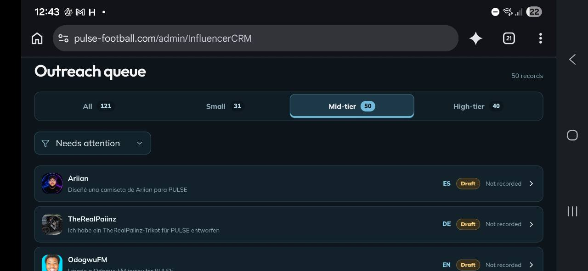
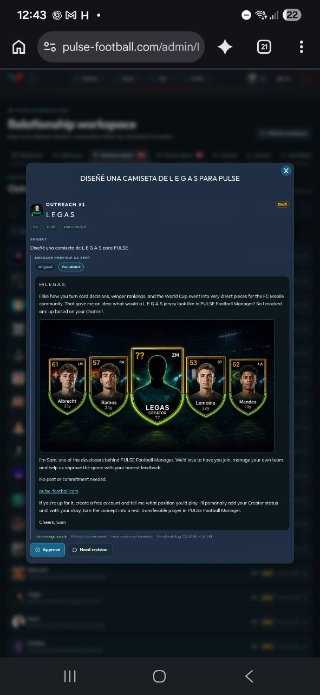

Agentic Influencer Outreach CRM
I built an internal creator outreach system that combined CRM state, multilingual research and drafting, email synchronization, follow ups, content tracking, attribution, review controls, and human escalation across more than 1,000 creator profiles.
- React
- Next.js
- TypeScript
- Node.js
- REST APIs
- PocketBase
- Google Drive
- Google Sheets
- Multilingual workflows
- Email synchronization
- Product analytics
- Agentic workflows
01
Executive Summary
The CRM replaced a manual outreach process in which creator research, message drafting, communication state, and attribution were expensive to coordinate.
I brought the work into one operational system. Creator profiles, audience segments, draft state, languages, responses, follow ups, content status, and attribution became visible in the same workflow. Agentic tools handled repeatable research and communication work, while review, revision, and escalation remained explicit controls.
02
From Fragmented Work to Operational State
The main problem was not sending one message. It was maintaining useful context across more than 1,000 creators while keeping the next action, message language, communication state, content status, and attribution visible. A manual CRM made every additional contact expensive because research and coordination were repeated by hand.
Creator state
Kept profiles, audience segments, language, draft state, and attention status available in one queue.
Prioritized work
Separated routine progress from records that needed attention, revision, or escalation.
Conversation context
Connected multilingual drafts, synchronized communication, responses, and follow ups to the creator record.
Business outcome
Tracked content and attribution so outreach activity could be connected to an operating result.
03
Agentic Workflow
Agents researched creators, prepared messages in the relevant language, synchronized communication state, followed up, and tracked content and attribution. The interface made that work inspectable instead of hiding it behind a single automation trigger.

Audience segments, language, draft state, recording state, and attention filters in one operational view.

Original and translated content, creator context, approval, revision, and traceable message state.
Research
Find the useful context
Prepared creator information and prioritization before communication work began.
Communication
Draft and synchronize
Created multilingual outreach, connected message state, and maintained follow ups.
Outcome
Track what happened
Connected creator content and attribution back to the operating workflow.
04
Control Points and Escalation
Agentic operation did not remove accountability. The system exposed the work and its current state so a person could approve, request revision, or handle an exception when judgment was required.
Review
Displayed the proposed message, creator context, language, and related content before approval.
Revision
Allowed a draft to be returned when tone, facts, or the proposed offer needed correction.
Escalation
Moved exceptions to human judgment instead of forcing automation through an uncertain case.
Visible state
Made draft, response, follow up, and content status inspectable throughout the workflow.
05
Measured Operating Result
Compared with the prior manual CRM and outreach workflow, tracked link opens increased by 83% and reply rate increased by 114%, while estimated cost per outreach fell from $30 to $1.50.
Creator profiles managed within the CRM and outreach workflow.
Increase compared with the previous manual process.
Increase compared with the previous manual process.
An estimated 95% reduction compared with manual CRM and outreach work.